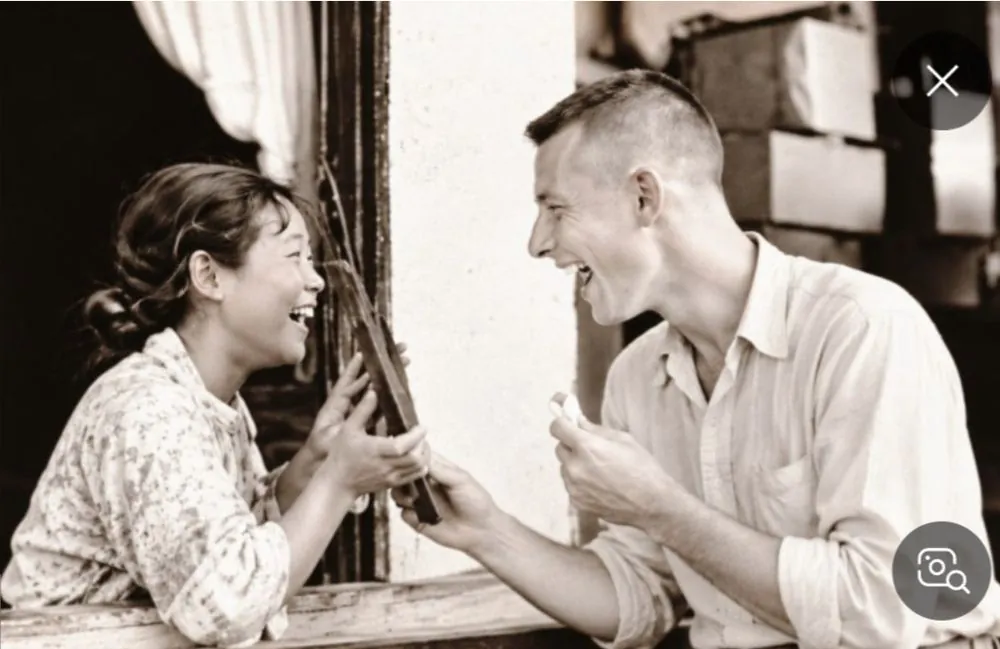

가족을 찾다가 사랑을 찾았다
70여 년 전 흑백 사진 한 장이 들춘 전쟁 속 러브스토리. 가족을 찾아 나선 길에서 시작된 사랑은 이름까지 빌려 바다를 건넜다.
사진 한 장이 있었다. 환하게 웃는 한국 여성과, 그를 마주 보며 소리 내어 웃는 미군 병사. 흑백의 70여 년 전 풍경인데도 웃음소리가 들리는 듯했다. 찰리 스미스 씨가 딸의 권유로 가족 앨범 속 사진 여덟 장쯤을 온라인에 올리자, 하룻밤 사이 조회수가 6만 회를 넘었고 미국과 한국의 많은 이들이 그 사진 앞에서 걸음을 멈췄다. 사진 속 두 사람은 그의 부모, 랠프와 이산이다.

잃은 것을 찾던 길에서 시작된 사랑
이야기는 1951년, 전쟁의 한복판 원주에서 시작된다. 원주에서 나고 자란 이산은 십대에 서울로 올라가 코트 공장에서 일하며 매주 고향으로 돈을 부치던 아가씨였다. 전쟁은 그 삶을 통째로 뒤집었다. 그는 위험천만한 길을 걸어 원주로 돌아갔다. 백 명쯤이 함께 걷다가 폭탄이 떨어져 그중 50명이 목숨을 잃었고, 그도 팔을 다쳤다. 어렵게 닿은 고향은 폭격으로 무너져 있었고, 그는 가족이 모두 죽었다고 생각했다.
그 무렵 그는 군용 트럭을 고쳐 다시 굴러가게 하던 정비병 랠프에게 다가가 말했다. "가족을 찾고 있어요." 두 사람은 지프를 타고 시골길을 누비며 만나는 사람마다 물었다. 이 사람의 가족을 보셨느냐고. 끝내 아무도 찾지 못했다. 그러나 가족을 찾아 헤매던 그 시간 동안, 두 사람은 서로를 사랑하고 있다는 사실을 알게 되었다.
규율보다 앞선 마음, 부대 자재로 지은 집
랠프는 이산과 허락된 것보다 더 오래 함께 있고 싶었다. 부대에 있어야 할 시간에 몰래 빠져나갔다가 들켜 군사재판을 받았고, 계급도 강등되었다. 그래도 멈추지 않았다. 그는 부대 자재로 집을 지었다. 사랑하는 사람과 함께 살기 위해서였다.
규율을 어긴 일을 미화할 수는 없다. 다만 그 대가를 치르고도 물러서지 않았다는 데서, 그가 이산을 얼마나 소중히 여겼는지는 또렷이 읽힌다. 아들 찰리는 아버지가 어머니를 위해서라면 할 수 있는 건 다 하셨다고 회고한다.
너와 네 엄마 없이는 한국을 떠날 수 없었다. — 랠프 스미스, 아들 찰리 스미스 씨에게 여러 번 한 말
이름을 빌려 건넌 바다
정전 협정 이듬해인 1954년, 세 식구는 한국을 떠나 미국으로 향했다. 그러나 길은 순탄하지 않았다. 전쟁 중에 이산의 출생 기록이 사라졌기 때문이다. 랠프는 미국 당국뿐 아니라 한국 당국과의 절차도 힘겹게 넘어야 했고, 아내와 아들을 데려가는 허가를 받으려고 2년을 싸웠다.
결국 이산과 나이가 비슷한 다른 여성의 기록을 찾아냈고, 그는 그 이름을 얻어 미국에 들어갔다. 세월이 흘러 세상을 떠나기 얼마 전, 그는 아들에게 말했다. "내 이름이 싫다. 나는 굴 박(Kwool Park)이 아니야." 아버지에게 물으니 아버지는 인정했다. 어머니의 본명은 박이산(Eusan Park)이었다.
평생 빌린 이름으로 살면서도 그는 사랑받는 아내이자 어머니로 살았다. 이름을 잃은 사람의 쓸쓸함과, 그 쓸쓸함을 끝내 곁에서 지켜본 남편의 사랑이 겹쳐 떠오른다.
미역과 고사리, 그리고 매일 저녁의 영어
샌프란시스코에서의 삶은 낯설고 외로웠다. 1950년대 미국에는 한국 사람이 거의 없었다. 한국 음식을 구할 수 없었고, 한국말을 나눌 사람도 없었다. 영어가 서툴렀던 이산은 남편이 일하러 나가면 아들과 아파트에 남아 몹시 외로워했고, 향수병이 깊어 한국으로 도망갈까 생각한 적도 있었다.
랠프는 아내의 기운을 북돋우려 무엇이든 했다. 아내가 원하면 미역이나 고사리를 직접 채집해 오고, 한국 출장길에는 캐리어 가득 한국 식재료를 구해 왔다. 매일 저녁에는 아내에게 영어를 가르쳤다. 사랑은 거창한 선언이 아니라, 이렇게 매일 되풀이되는 작은 수고로 증명된다.
수십 년 만에 도착한 편지
랠프는 아내의 가족 찾기를 평생 포기하지 않았다. 해마다 적십자사에 편지를 보내 행방을 수소문했고, 1990년대에 마침내 아내의 가족 소식을 얻어 냈다. 어느 평범한 저녁, 이산은 아들에게 전화를 걸었다. 어찌나 서럽게 우는지 무슨 말인지 알아들을 수 없었고, 5분쯤 지나서야 큰오빠에게서 편지를 받았다는 말이 나왔다. 오빠가 살아 있었고, 북한에 살고 있었다.
찰리는 처음에 돈을 노린 사기일 거라며 어머니를 말렸다. 그러나 편지에는 두 남매만 아는 이야기가 적혀 있었고, 그중 하나가 함께 부르던 노래였다. 노래를 참 잘하던 동생이었기에, 오빠는 그 노래로 자신이 누구인지 증명한 셈이었다. 함께 부르던 노래 한 소절이 갈라진 땅과 수십 년의 세월을 건너온 것이다. 가족을 찾아 나선 길에서 시작된 사랑이, 끝내 가족을 찾아 주는 사랑으로 돌아왔다.
"사랑해요, 기억하죠?"
이산이 세상을 떠나기 전 가족에게 남긴 음성이 있다. 영어로 남긴 그 말에는 이런 뜻이 담겨 있다. 평생 나에게 너무 많은 것을 해 주었고, 50년 동안 나를 아껴 주었으며, 그 모든 일을 절대 잊지 않을 것이라고. 그리고 이렇게 마무리한다. 사랑해요, 정말 많이 사랑해요. 기억하죠? 알았죠?
아들 찰리는 지금도 그 목소리를 들으면 감정이 북받쳐 견디기 어렵다고 말한다. 그는 어머니가 돌아가신 뒤 아버지도 더 살고 싶은 마음이 없으셨으리라고 믿는다. 아내가 갔으니 나도 간다, 하고 생각하셨을 것 같다고.
대단한 러브스토리죠. — 찰리 스미스 씨, 인터뷰를 마치며
남는 것은 사랑뿐
전쟁은 집을 부수고, 가족을 흩고, 이름의 기록마저 지워 버렸다. 그러나 전쟁이 끝내 지우지 못한 것이 있었다. 무너진 고향에서 가족을 찾아 달라던 한 사람과, 그 부탁을 평생 잊지 않은 또 한 사람의 마음이다.
성경은 사랑이 모든 것을 참고, 모든 것을 믿으며, 모든 것을 바라고, 모든 것을 견딘다고 말한다(고린도전서 13:7). 랠프와 이산의 삶은 그 말씀을 한 가정의 역사로 풀어 쓴 듯하다. 사진 속 두 사람은 웃고 있다. 그 웃음은 아무 걱정 없는 사람의 것이 아니라, 서로가 곁에 있어 견딜 수 있었던 사람들의 것이다. 우리가 오늘 사랑하는 이에게 건네야 할 것도 크고 대단한 무엇이 아닐지 모른다. 곁에 있어 주는 것, 끝까지 포기하지 않는 것, 그리고 "사랑해요, 기억하죠?"라고 말해 두는 것이다.